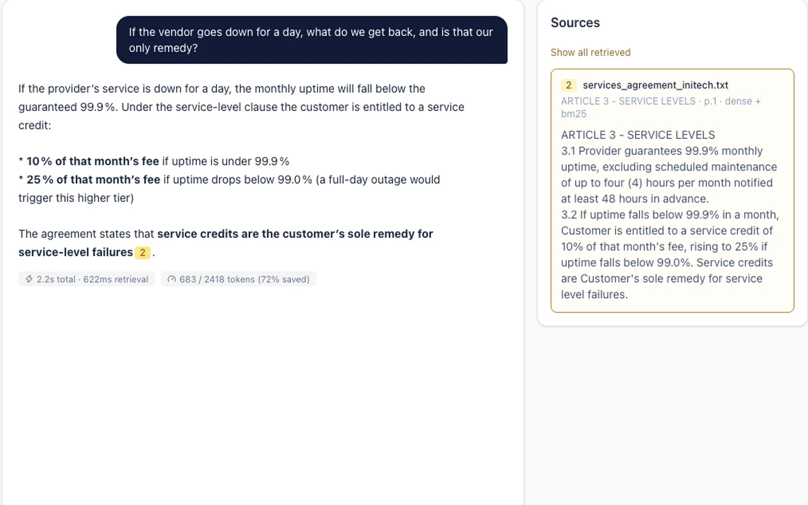
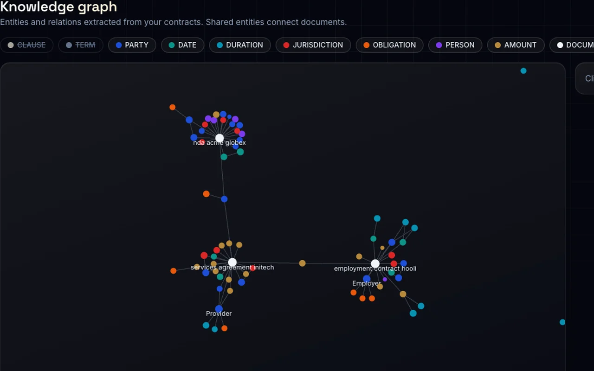
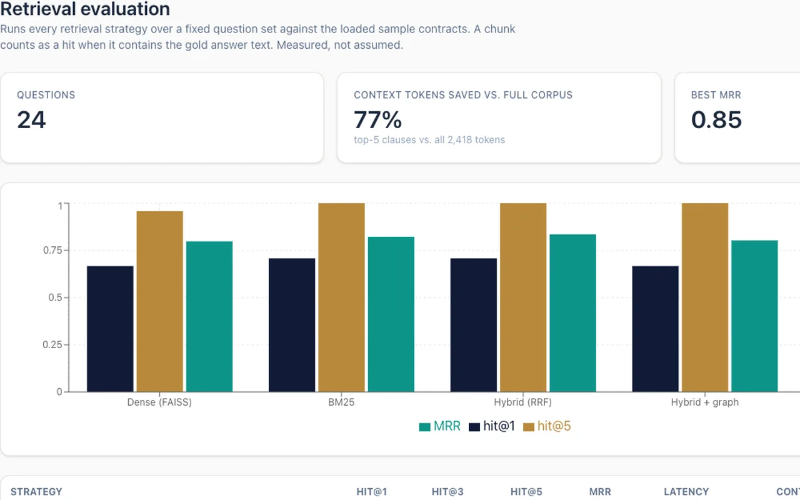

01 · RAG platform
Legal Document Intelligence: RAG Platform
Ask questions about contracts and get answers that cite the exact clause they came from.
- Hybrid retrieval that blends meaning and keywords, then re-ranks for precision.
- Private workspaces and side-by-side contract comparison.
- Protected against uploaded files that try to trick the AI.
FastAPIReactTypeScriptFAISSLangChainSSE